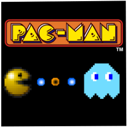

Introduction
- First Year Computer Games Programmer at Staffordshire University
- Undertook A-Levels in Computer Science, Maths and Psychology
Code Hard, Game Hard
I am currently studying Computer Games Programming at Staffordshire University, and I'm really keen to get to work in an industry that feeds my passion of gaming. My programming interest lies in sound and UI, which are the aspects of games which immerse the players and give them a fun gaming experience. My passion for photography also feeds into my appreciation for being able to create an aesthetic game that players will enjoy looking at and being able to immerse themselves into.
Below, you can find examples of work I have done, as well as ways to get in touch!
C++ || Visual Studio || Collision
 In the first semester of the first year, I took a Pacman framework and improved on it for a University assignment, learning the fundamentals of programming, and helping me develop my understanding of C++, by programming the basic AI of ghost enemies, collision detection and using sprite sheets to animate characters.
C++ || Visual Studio
 Mario is a greatly influential character in the video games industry. Mario is a greatly influential character in the video games industry. Mario is a greatly influential character in the video games industry. Mario is a greatly influential character in the video games industry. Mario is a greatly influential character in the video games industry. Mario is a greatly influential character in the video games industry.
Mario is a greatly influential character in the video games industry. Mario is a greatly influential character in the video games industry. Mario is a greatly influential character in the video games industry. Mario is a greatly influential character in the video games industry. Mario is a greatly influential character in the video games industry. Mario is a greatly influential character in the video games industry.
OpenGL || Visual Studio || C++
OpenGL is good for rendering graphics. OpenGL is good for rendering graphics. OpenGL is good for rendering graphics. OpenGL is good for rendering graphics. OpenGL is good for rendering graphics. OpenGL is good for rendering graphics. OpenGL is good for rendering graphics. OpenGL is good for rendering graphics. OpenGL is good for rendering graphics. OpenGL is good for rendering graphics. OpenGL is good for rendering graphics.
You can find ways to contact me below: